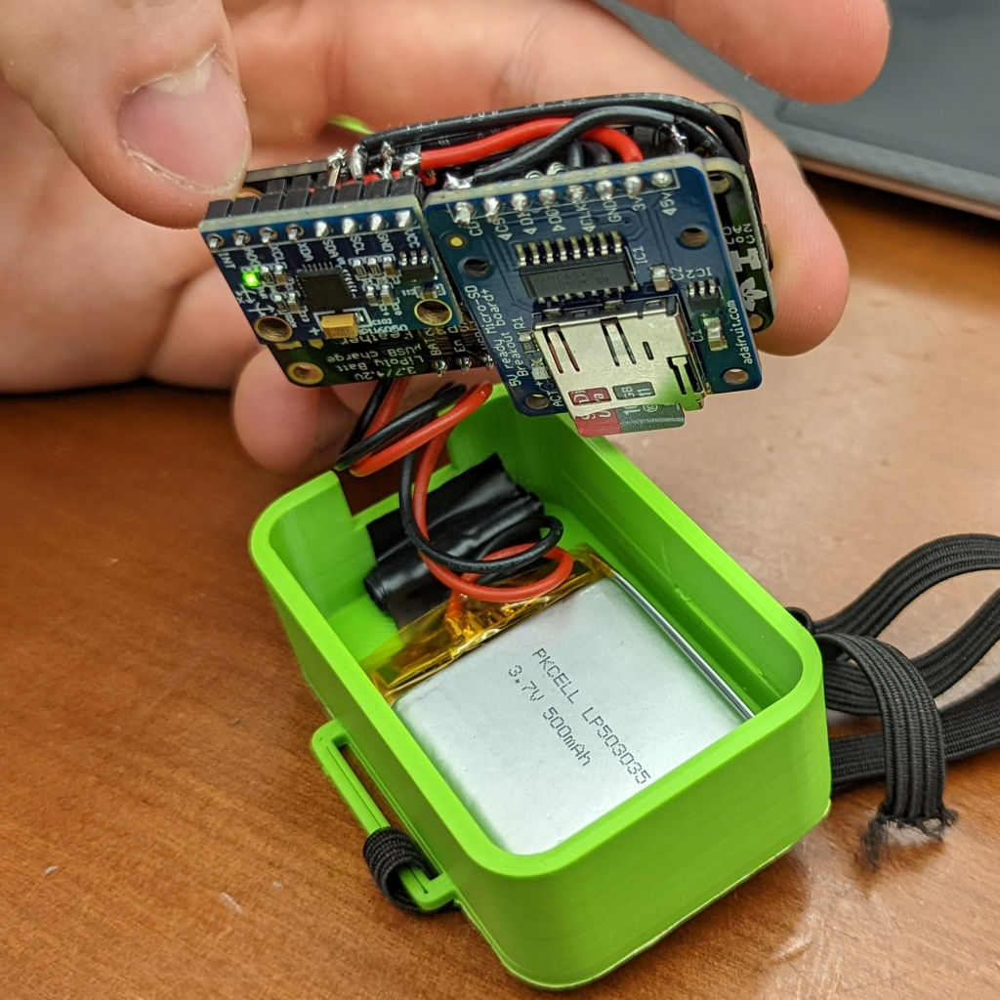
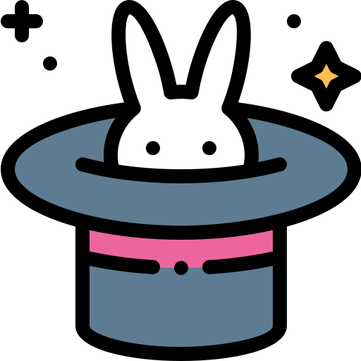
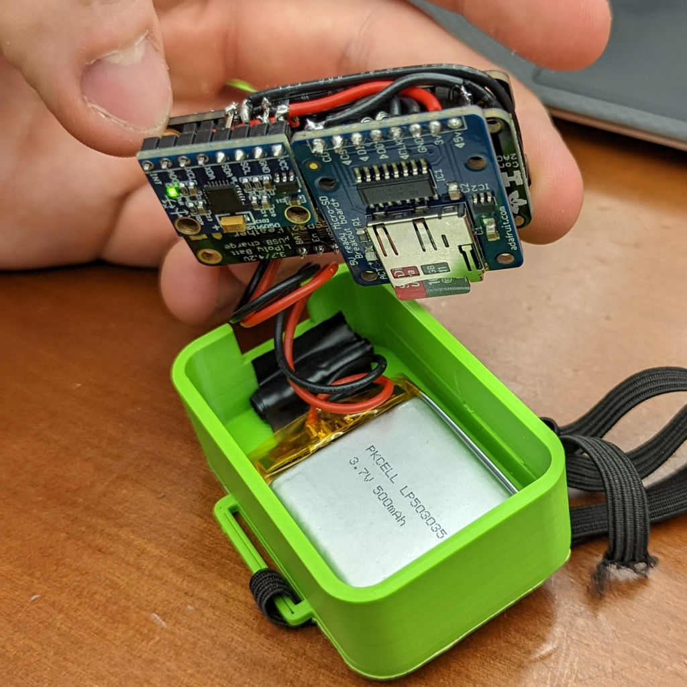
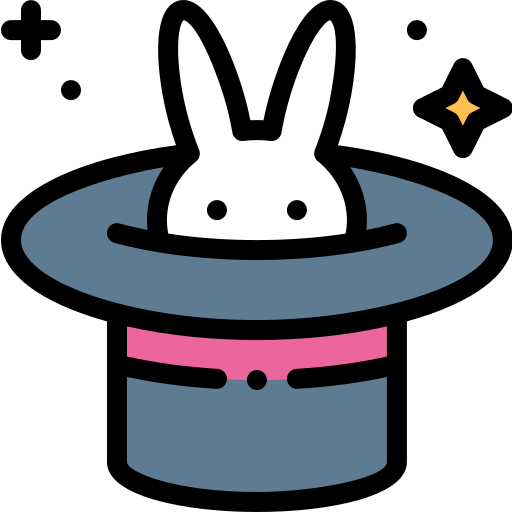

Who
Chris Uustal
Northwestern University:
- Computer Engineering BS ’23
- Electrical Engineering MS ’23
Extracurriculars:
- Northwestern Formula Racing (FSAE) Lead ’20-’22
- IEEE Project Manager ’21-’22
Work:
- Systems Integration Intern @ Tesla ’22
- PCB Designer @ Northwestern Ka Moamoa Lab ’22
- Engineering Intern @ Masonite ’21-’22
- Controls Intern @ Pratt & Miller ’20
What
As am embedded engineer, I develop hardware and software that work together to solve real problems.
I design solutions anywhere in the product life cycle from exploratory research and prototypes up to production designs being delivered to consumers.
Working at the HW/SW interface, I have experience with the entire development stack from chip layout to firmware to front-end UI and everything in between.
Where
Currently located in Evanston, IL
Relocating to Palo Alto, California in Summer of 2023
When
Currently not searching for employment, but if you're interested in connecting with me, feel free to reach out any time! I'm more than happy to help connect people with resources or whatever I can do to improve the lives of you engineers.
Why
Magic Engineering
When I was young, computers were magic boxes that let me play videogames. Now, I’m a magician.
Engineering is about solving human problems, and I believe helping as many people as possible is a shared duty we all bare.
We live in a world where yesterdays impossible becomes today’s reality every day. No dream is too high. No goal is out of reach. Together, we can make magic happen.